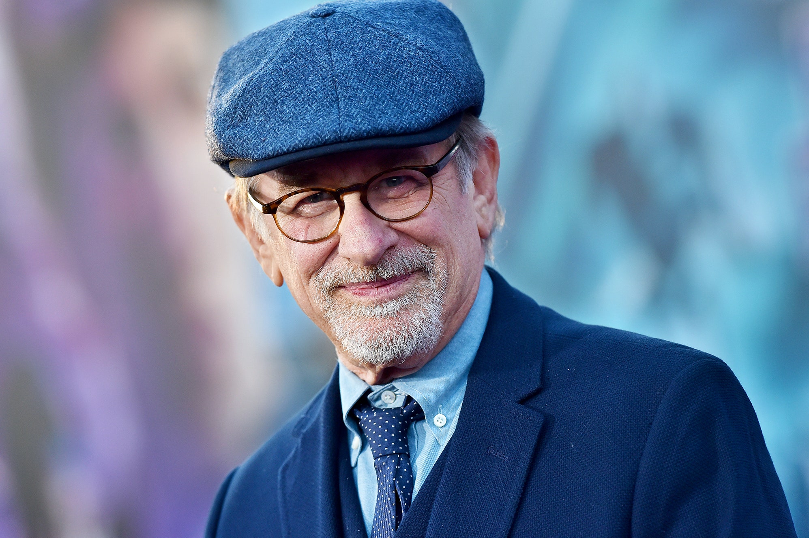

DIREÇÃO
Steven Allan Spielberg é um premiado cineasta, produtor cinematográfico e roteirista. Spielberg é o diretor que tem mais filmes na lista dos 100 Melhores Filmes Americanos de Todos os Tempos, sendo alguns deles: os clássicos "Jurassic Park" e os "Jurassic World", outros clássicos também são "Tubarão" e "E.T O Extraterrestre" que está na 8 posição de melhor filme do mundo considerado pela hollywood.
SINOPSE
Ao desembarcar na Normandia, no dia 6 de junho de 1944, mais conhecido como "Dia D" o Capitão Miller recebe a missão de comandar um grupo do Segundo Batalhão para o resgate do soldado James Ryan, o caçula de quatro irmãos, dentre os quais três morreram em combate, eles precisam procurar o soldado e garantir o seu retorno, com vida, para casa.
CRITICA
Em O Resgate do Soldado Ryan, Spielberg resolveu colocar o ponto de vista do espectador junto dos homens que arriscaram suas vidas em meio ao conflito. Se já não fosse drama o suficiente a própria Segunda Guerra, o cineasta buscou no roteiro de Robert Rodat um elemento mais extremo. E se a vida de oito soldados estivesse em jogo na tentativa de encontrar apenas um homem nas linhas inimigas? Enquanto o batalhão se pergunta a lógica desta matemática, o próprio soldado Ryan confronta-se com esta realidade, visto que não se sente mais ou menos especial do que seu companheiro de armas. Com esta premissa, Steven Spielberg realiza um dos grandes dramas de guerra da história do cinema. Ainda que seja muito lembrado pelos primeiros 25 minutos de ação ininterrupta, mostrando de forma crua e violenta a invasão à Normandia pela tropa aliada, O Resgate do Soldado Ryan consegue ir além. Com fotografia granulada e com as cores diminuídas para dar um tom mais cru ao longa-metragem, o diretor de fotografia Janusz Kaminski garantiu seu segundo Oscar (depois de ter vencido o primeiro por A Lista de Schindler). Este foi um dos quatro prêmios da Academia que o filme recebeu – Diretor, Montagem, Edição de Som e Mixagem de Som. Também foi indicado (entre outras categorias) a Roteiro, Ator e Filme do ano, mas incrivelmente não recebeu estes outros merecidos louros. Se não teve este reconhecimento, ao menos o tempo tem mostrado que nenhuma lista com grandes filmes está completa sem este, um dos melhores trabalhos comandados por Steven Spielberg. De um cineasta com tantos títulos inesquecíveis, isso não é pouco.